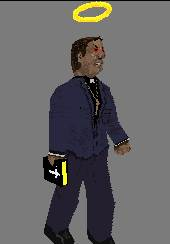

Vernon The Violent Vicar
QuakeII player model
Model Details:
vicar - Quake 2 player model, by ProzaQ the "chilled", SpiderMeister for the CtC playing, frag-happy, chook-owning band of Quaketeers:
Who
Clucked?
Clan website
And it came to pass that His Flatulence walked upon the Earth... And through his wanderings, he chanced upon a chook (chicken) and he saw that it was good. And the chook fled in awe of his mighty book and Flatus was sore annoyed... And so he chased the chook and whereupon he caught it, he did proceed to choke it. And he saw that this was good and that the chook was also succulent...
Making cyber-space history, the WhoClucked? Clan planned the first, online Quake2 'vicars and tarts' party... But, unfortunately, no one had, yet, come across a PPM for a vicar - so it fell to me to create one. Seeing how good it was, El Prezedente of the clan decided to adopt it as his own - as in keeping with his clan persona. And, in keeping with just about everything else I seem to be doing for the clan nowadays, it is also PPM that doesn't lack for humour...
This model was based on the PPM "Bill Gates" by Lewis Mitchell (lewism@alphalink.com.au). It includes CTF skins and incorporates some spiffy new death-sounds, created by His Flatulence. Support for the VWeapons patch can be achieved by running the included (dos) batch file - this is to preserve the good Reverend's bible AND save you download time by reducing the archive size...
There are far too many files in this archive to list individually, but essentially you should have:
In the interests of minimal confusion during the installation process, the files in this archive are pathed - relative to the basic Quake2 directory. Successfull installation of this player model will place the files in:
Quake2\baseq2\players\vicar\[files]
buk... buk...
Sq'ark!
Feb 1999